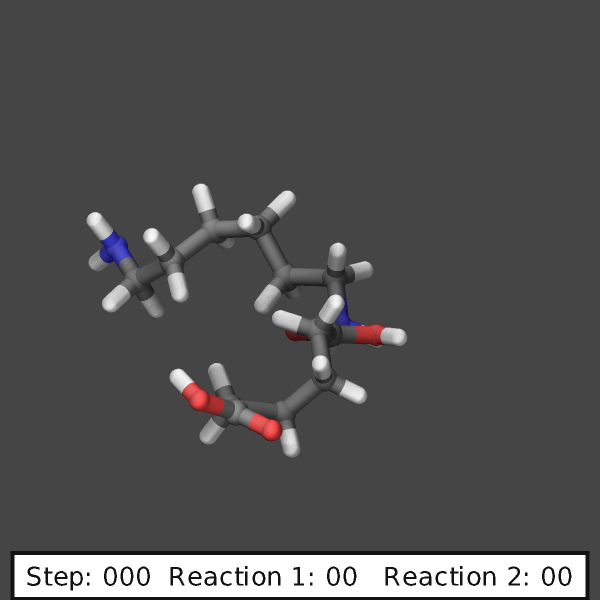
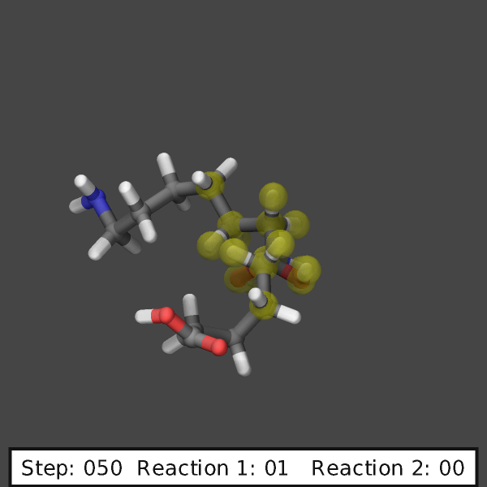
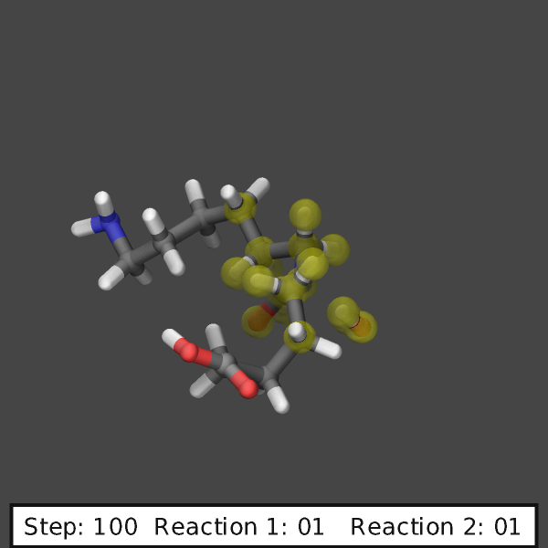
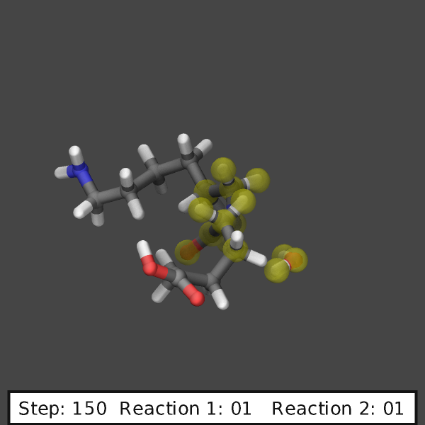
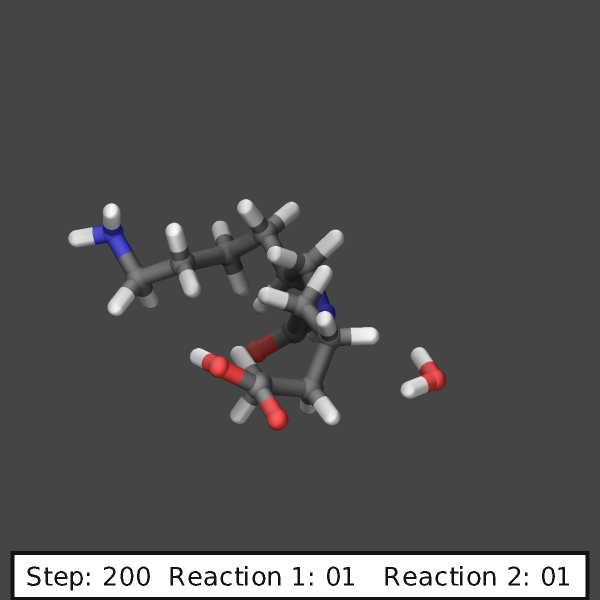

\(\renewcommand{\AA}{\text{Å}}\)
fix bond/react command
Syntax
fix ID group-ID bond/react common_keyword values &
react react-ID react-group-ID Nevery Rmin Rmax template-ID(pre-reacted) template-ID(post-reacted) map_file individual_keyword values &
react react-ID react-group-ID Nevery Rmin Rmax template-ID(pre-reacted) template-ID(post-reacted) map_file individual_keyword values &
react react-ID react-group-ID Nevery Rmin Rmax template-ID(pre-reacted) template-ID(post-reacted) map_file individual_keyword values &
...
ID, group-ID are documented in fix command.
bond/react = style name of this fix command
the common keyword/values may be appended directly after ‘bond/react’
common keywords apply to all reaction specifications
common_keyword = stabilization or reset_mol_ids or rate_limit or max_rxn or shuffle_seed or file
stabilization values = stabilize group_prefix xmax stabilize = yes or no yes = perform reaction site stabilization no = no reaction site stabilization (default) group_prefix = user-assigned prefix for the dynamic group of atoms not currently involved in a reaction xmax = value that is used by an internally-created nve/limit integrator reset_mol_ids values = yes or no or molmap yes = update molecule IDs based on new global topology (default) no = do not update molecule IDs molmap = customize how molecule IDs are updated rate_limit values = react-ID_1 react-ID_2 ... react-ID_N Nlimit Nsteps react-IDs = one or more names of the reactions to include in rate limit Nlimit = maximum number of reactions allowed to occur within interval Nsteps = the interval (number of timesteps) over which to count reactions max_rxn values = react-ID_1 react-ID_2 ... react-ID_N Nlimit react-IDs = one or more names of the reactions to include in rate limit Nlimit = maximum total number of reactions allowed to occur shuffle_seed value = seed seed = random # seed (positive integer) for choosing between eligible reactions file value = filename filename = name of the JSON file that records reaction occurrencesreact = mandatory argument indicating new reaction specification
react-ID = user-assigned name for the reaction
react-group-ID = only atoms in this group are considered for the reaction
Nevery = attempt reaction every this many steps
Rmin = initiator atoms must be separated by more than Rmin to initiate reaction (distance units)
Rmax = initiator atoms must be separated by less than Rmax to initiate reaction (distance units)
template-ID(pre-reacted) = ID of a molecule template containing pre-reaction topology
template-ID(post-reacted) = ID of a molecule template containing post-reaction topology
map_file = name of file specifying corresponding atom-IDs in the pre- and post-reacted templates
zero or more individual keyword/value pairs may be appended to each react argument
individual_keyword = prob or stabilize_steps or custom_charges or rescale_charges or molecule or modify_create
prob values = fraction seed fraction = initiate reaction with this probability if otherwise eligible seed = random number seed (positive integer) stabilize_steps value = timesteps timesteps = number of time steps to apply the internally-created nve/limit fix to reacting atoms custom_charges value = no or fragment-ID no = update all atomic charges (default) fragment-ID = ID of molecule fragment whose charges are updated rescale_charges value = no or yes no = do not rescale atomic charges (default) yes = rescale charges such that total charge does not change during reaction molecule value = off or inter or intra off = allow both inter- and intramolecular reactions (default) inter = search for reactions between molecules with different IDs intra = search for reactions within the same molecule modify_create values = keyword arg fit arg = all or fragment-ID all = use all eligible atoms for create-atoms fit (default) fragment-ID = ID of molecule fragment used for create-atoms fit overlap value = R R = only insert atom/molecule if further than R from existing particles (distance units)
Examples
For unabridged example scripts and files, see examples/PACKAGES/reaction.
molecule mol1 pre_reacted_topology.txt
molecule mol2 post_reacted_topology.txt
fix rxns all bond/react react diels_alder all 1 0 3.25 mol1 mol2 map_file.txt
molecule mol1 pre_reacted_rxn1.txt
molecule mol2 post_reacted_rxn1.txt
molecule mol3 pre_reacted_rxn2.txt
molecule mol4 post_reacted_rxn2.txt
fix 5 all bond/react stabilization yes nvt_grp .03 &
react myrxn1 all 1 0 3.25 mol1 mol2 map_file_rxn1.txt prob 0.50 12345 &
react myrxn2 all 1 0 2.75 mol3 mol4 map_file_rxn2.txt prob 0.25 12345
fix 6 nvt_grp_REACT nvt temp 300 300 100 # set thermostat after bond/react
Description
Initiate complex covalent bonding (topology) changes. These topology changes will be referred to as ‘reactions’ throughout this documentation. Topology changes are defined in pre- and post-reaction molecule templates and can include creation and deletion of bonds, angles, dihedrals, impropers, bond types, angle types, dihedral types, atom types, or atomic charges. In addition, reaction by-products or other molecules can be identified and deleted. Finally, atoms can be created and inserted at specific positions relative to the reaction site.
Fix bond/react does not use quantum mechanical (e.g., fix qmmm) or pairwise bond-order potential (e.g., Tersoff or AIREBO) methods to determine bonding changes a priori. Rather, it uses a distance-based probabilistic criteria to effect predetermined topology changes in simulations using standard force fields.
This fix was created to facilitate the dynamic creation of polymeric, amorphous or highly cross-linked systems. A suggested workflow for using this fix is
identify a reaction to be simulated
build a molecule template of the reaction site before the reaction has occurred
build a molecule template of the reaction site after the reaction has occurred
create a map that relates the template-atom-IDs of each atom between pre- and post-reaction molecule templates
fill a simulation box with molecules and run a simulation with fix bond/react.
Note
Added in version 15Sep2022.
Type labels allow for molecule templates and data files to use alphanumeric atom types that match those of a force field. Input files that use type labels are inherently compatible with each other and portable between different simulations. Therefore, it is highly recommended to use type labels to specify atom, bond, etc. types when using fix bond/react.
Only one ‘fix bond/react’ command can be used at a time. Multiple reactions can be simultaneously applied by specifying multiple react arguments to a single ‘fix bond/react’ command. This syntax is necessary because the “common” keywords are applied to all reactions.
The stabilization keyword enables reaction site stabilization. Reaction site stabilization is performed by including reacting atoms in an internally-created fix nve/limit time integrator for a set number of time steps given by the stabilize_steps keyword. While reacting atoms are being time integrated by the internal nve/limit, they are prevented from being involved in any new reactions. The xmax value keyword should typically be set to the maximum distance that non-reacting atoms move during the simulation.
Fix bond/react creates and maintains two important dynamic groups of atoms when using the stabilization keyword. The first group contains all atoms currently involved in a reaction; this group is automatically time-integrated by an internally-created nve/limit integrator. The second group contains all atoms currently not involved in a reaction. This group should be controlled by a thermostat in order to time integrate the system. The name of this group of non-reacting atoms is created by appending ‘_REACT’ to the group-ID argument of the stabilization keyword, as shown in the second example above.
Note
When using reaction stabilization, you should generally not have a separate thermostat that acts on the “all” group.
The group-ID set using the stabilization keyword can be an existing static group or a previously-unused group-ID. It cannot be specified as “all”. If the group-ID is previously unused, the fix bond/react command creates a dynamic group that is initialized to include all atoms. If the group-ID is that of an existing static group, the group is used as the parent group of new, internally-created dynamic group. In both cases, this new dynamic group is named by appending ‘_REACT’ to the group-ID (e.g., nvt_grp_REACT). By specifying an existing group, you may thermostat constant-topology parts of your system separately. The dynamic group contains only atoms not involved in a reaction at a given time step, and therefore should be used by a subsequent system-wide time integrator such as fix nvt, fix npt, or fix nve, as shown in the second example above (full examples can be found in examples/PACKAGES/reaction). The time integration command should be placed after the fix bond/react command due to the internal dynamic grouping performed by fix bond/react.
Note
If the group-ID is an existing static group, react-group-IDs should also be specified as this static group or a subset.
Added in version 2Apr2025: New molmap option
If the reset_mol_ids keyword is set to yes (default), the reset_atoms mol command is invoked after a reaction occurs, to ensure that molecule IDs are consistent with the new bond topology. The group-ID used for reset_atoms mol is the group-ID for this fix. Resetting molecule IDs is necessarily a global operation, so it can be slow for very large systems. If the reset_mol_ids keyword is set to no, molecule IDs are not updated. If the reset_mol_ids keyword is set to molmap, molecule IDs are updated consistently with the molecule IDs listed in the Molecules section of the pre- and post-reaction templates. If a post-reaction atom has the same molecule ID as one or more pre-reaction atoms in the templates, then the post-reaction simulation atom will be assigned the same simulation molecule ID that those corresponding pre-reaction simulation atoms had before the reaction. The molmap option is only guaranteed to work correctly if all the pre-reaction atoms that have equivalent template molecule IDs also have equivalent molecule IDs in the simulation. No check is performed to test for this consistency. For post-reaction atoms that have a template molecule ID that does not exist in pre-reaction template, they are assigned a new molecule ID that does not currently exist in the simulation.
The rate_limit keyword can enforce an upper limit on the overall rate of one or more reactions. The number of reaction occurrences is limited to Nlimit within an interval of Nsteps timesteps. No reactions are permitted to occur within the first Nsteps timesteps of the first run after reading a data file. The reactions to sum over are listed by reaction name (react-ID). The number of reaction occurrences is calculated by summing over the listed reactions. This sum is limited to Nlimit, which can be specified with an equal-style variable. Reaction occurrences are chosen randomly from all eligible reaction sites of all listed reactions. By default, a hardware-based random number source is used if available; reactions are chosen deterministically if a positive integer is specified for the ‘shuffle_seed’ keyword. Multiple rate_limit keywords can be specified. This keyword is useful when multiple react arguments define similar types of reactions, and the relative rates between two or more types of reactions must be enforced.
The max_rxn keyword can enforce an upper limit on the overall number of one or more reactions. The reactions to sum over are listed by reaction name (react-ID). The number of reaction occurrences is calculated by summing over the listed reactions. This sum is limited to Nlimit. Reaction occurrences are chosen randomly from all eligible reaction sites of all listed reactions. By default, a hardware-based random number source is used if available; reactions are chosen deterministically if a positive integer is specified for the ‘shuffle_seed’ keyword. Multiple max_rxn keywords can be specified.
Added in version 10Dec2025.
The file keyword can be used to dump information about each reaction that occurs during the simulation. The atom IDs, types, and coordinates of all atoms in the reaction site are printed out on the timestep that the reaction is initiated. The output file follows the JSON dump molecules format, with one extra key added to each molecule object to identify the reaction. The added key is “reaction” and its value is the reaction name (react-ID). Here is an example output for a hypothetical reaction involving one water molecule:
{
"application": "LAMMPS",
"units": "real",
"format": "dump",
"style": "molecules",
"revision": 1,
"title": "fix bond/react",
"timesteps": [
{
"timestep": 1,
"molecules": [
{
"reaction": "water_dissociation",
"types": {
"format": ["atom-id", "type"],
"data": [
[1368, "H"],
[1366, "O"],
[1367, "H"]
]
},
"coords": {
"format": ["atom-id", "x", "y", "z"],
"data": [
[1368, 26.787767440427466, 29.785528640296768, 25.85197353660144],
[1366, 26.641801222582824, 29.868106247702887, 24.91285138212243],
[1367, 25.69611192416744, 30.093425787807448, 24.914380215672846]
]
}
}
]
}
]
}
The following comments pertain to each react argument (in other words, they can be customized for each reaction, or reaction step):
A check for possible new reaction sites is performed every Nevery time steps. Nevery can be specified with an equal-style variable, whose value is rounded up to the nearest integer.
Three physical conditions must be met for a reaction to occur. First, an initiator atom pair must be identified within the reaction distance cutoffs. Second, the topology surrounding the initiator atom pair must match the topology of the pre-reaction template. Only atom types and bond connectivity are used to identify a valid reaction site (not bond types, etc.). Finally, any reaction constraints listed in the map file (see below) must be satisfied. If all of these conditions are met, the reaction site is eligible to be modified to match the post-reaction template.
An initiator atom pair will be identified if several conditions are met. First, a pair of atoms \(i\) and \(j\) within the specified react-group-ID of type itype and jtype must be separated by a distance between Rmin and Rmax. Rmin and Rmax can be specified with equal-style variables. For example, these reaction cutoffs can be functions of the reaction conversion using the following commands:
variable rmax equal 0 # initialize variable before bond/react
fix myrxn all bond/react react myrxn1 all 1 0 v_rmax mol1 mol2 map_file.txt
variable rmax equal 3+f_myrxn[1]/100 # arbitrary function of reaction count
The following criteria are used if multiple candidate initiator atom pairs are identified within the cutoff distance:
If the initiator atoms in the pre-reaction template are not 1–2 neighbors (i.e., not directly bonded) the closest potential partner is chosen.
Otherwise, if the initiator atoms in the pre-reaction template are 1–2 neighbors (i.e. directly bonded) the farthest potential partner is chosen.
Then, if both an atom \(i\) and atom \(j\) have each other as initiator partners, these two atoms are identified as the initiator atom pair of the reaction site.
Note that it can be helpful to select unique atom types for the initiator atoms: if an initiator atom pair is identified, as described in the previous steps, but it does not correspond to the same pair specified in the pre-reaction template, an otherwise eligible reaction could be prevented from occurring. Once this unique initiator atom pair is identified for each reaction, there could be two or more reactions that involve the same atom on the same time step. If this is the case, only one such reaction is permitted to occur. This reaction is chosen randomly from all potential reactions involving the overlapping atom. This capability allows, for example, different reaction pathways to proceed from identical reaction sites with user-specified probabilities.
The pre-reacted molecule template is specified by a molecule command. This molecule template file contains a sample reaction site and its surrounding topology. As described below, the initiator atom pairs of the pre-reacted template are specified by atom ID in the map file. The pre-reacted molecule template should contain as few atoms as possible while still completely describing the topology of all atoms affected by the reaction (which includes all atoms that change atom type or connectivity, and all bonds that change bond type). For example, if the force field contains dihedrals, the pre-reacted template should contain any atom within three bonds of reacting atoms.
Some atoms in the pre-reacted template that are not reacting may have missing topology with respect to the simulation. For example, the pre-reacted template may contain an atom that, in the simulation, is currently connected to the rest of a long polymer chain. These are referred to as edge atoms, and are specified in the map file in the EdgeIDs section. All pre-reaction template atoms should be linked to an initiator atom, via at least one path that does not involve edge atoms. When the pre-reaction template contains edge atoms, not all atoms, bonds, etc. specified in the reaction templates will be updated. Specifically, topology that involves only atoms that are “too near” to template edges will not be updated. The definition of “too near the edge” depends on which interactions are defined in the simulation. If the simulation has defined dihedrals, atoms within two bonds of edge atoms are considered “too near the edge.” If the simulation defines angles, but not dihedrals, atoms within one bond of edge atoms are considered “too near the edge.” If just bonds are defined, only edge atoms are considered “too near the edge.”
Note
Small molecules (i.e., ones that have all their atoms contained within the reaction templates) never have edge atoms.
Note that some care must be taken when a building a molecule template for a given simulation. All atom types in the pre-reacted template must be the same as those of a potential reaction site in the simulation. A detailed discussion of matching molecule template atom types with the simulation is provided on the molecule command page. It is highly recommended to use Type labels (added in version 15Sep2022) in both molecule templates and data files, which automates the process of syncing atom types between different input files.
Wildcard atoms match to any atom type in the simulation. Wildcard atoms can be used to reduce the number of reaction templates needed to model a set of similar reactions. Wildcard atoms are specified in the Wildcards section of the map file. The atom types of wildcard atoms in the simulation are not updated. Any bond, angle, dihedral, or improper, that is defined in the reaction templates and contains a wildcard atom, will be updated by inferring its type from its constituent atom types. To use wildcard atoms, a specific type label format is necessary to infer the types of higher-order interactions. Bond, angle, dihedral, and improper type labels must contain their constituent atom types delimited by hyphens, e.g., ‘c2-c2-c2-n’ for a dihedral that contains three atoms of type ‘c2’ and one atom of ‘n’. Certain symmetries are considered to account for equivalent ways of writing higher-order interactions. Type labels for bonds, angles, and dihedrals are assumed to be equivalent to those written in reverse order. For example, an angle with type label ‘c1-c2-n’ is equivalent to ‘n-c2-c1’. Symmetries for impropers are more complex and are described on the doc page for each improper style in the ‘Symmetry convention’ section.
The post-reacted molecule template contains a sample of the reaction site and its surrounding topology after the reaction has occurred. It must contain the same number of atoms as the pre-reacted template (unless there are created atoms). A one-to-one correspondence between the atom IDs in the pre- and post-reacted templates is specified in the map file as described below. Note that during a reaction, an atom, bond, etc. type may change to one that was previously not present in the simulation. These new types must also be defined during the setup of a given simulation. A discussion of correctly handling this is also provided on the molecule command page.
Note
When a reaction occurs, it is possible that the resulting topology/atom (e.g., special bonds, dihedrals) exceeds that of the existing system and reaction templates. As when inserting molecules, enough space for this increased topology/atom must be reserved by using the relevant “extra” keywords to the read_data or create_box commands.
The map file is a text document with the following format:
A map file has a header and a body. The header of the map file contains one mandatory keyword and six optional keywords. The mandatory keyword is equivalences:
N equivalences = # of atoms N in the reaction molecule templates
The optional keywords are edgeIDs, wildcards, deleteIDs, createIDs, chiralIDs, and constraints:
N edgeIDs = # of edge atoms N in the pre-reacted molecule template N wildcards = # of atoms with wildcard atom types N N deleteIDs = # of atoms N that are deleted N createIDs = # of atoms N that are created N chiralIDs = # of chiral centers N N constraints = # of reaction constraints N
The body of the map file contains two mandatory sections and six optional sections. The first mandatory section begins with the keyword “InitiatorIDs” and lists the two atom IDs of the initiator atom pair in the pre-reacted molecule template. The second mandatory section begins with the keyword “Equivalences” and lists a one-to-one correspondence between atom IDs of the pre- and post-reacted templates. The first column is an atom ID of the pre-reacted molecule template, and the second column is the corresponding atom ID of the post-reacted molecule template. The first optional section begins with the keyword “EdgeIDs” and lists the atom IDs of edge atoms in the pre-reacted molecule template. The second optional section begins with the keyword “Wildcards” and lists the pre-reaction atom IDs of atoms that have wildcard atom types. The third optional section begins with the keyword “DeleteIDs” and lists the atom IDs of pre-reaction template atoms to delete. The fourth optional section begins with the keyword “CreateIDs” and lists the atom IDs of the post-reaction template atoms to create. The fifth optional section begins with the keyword “ChiralIDs” lists the atom IDs of chiral atoms whose handedness should be enforced. The sixth optional section begins with the keyword “Constraints” and lists additional criteria that must be satisfied in order for the reaction to occur. Currently, there are six types of constraints available, as discussed below: “distance”, “angle”, “dihedral”, “arrhenius”, “rmsd”, and “custom”.
A sample map file is given below:
# this is a map file
7 equivalences
2 edgeIDs
InitiatorIDs
3
5
EdgeIDs
1
7
Equivalences
1 1
2 2
3 3
4 4
5 5
6 6
7 7
A user-specified set of atoms can be deleted by listing their pre-reaction template IDs in the DeleteIDs section. A deleted atom must still be included in the post-reaction molecule template, in which it cannot be bonded to an atom that is not deleted. In addition to deleting unwanted reaction by-products, this feature can be used to remove specific topologies, such as small rings, that may be otherwise indistinguishable.
Atoms can be created by listing their post-reaction template IDs in the CreateIDs section. A created atom should not be included in the pre-reaction template. The inserted positions of created atoms are determined by the coordinates of the post-reaction template, after optimal translation and rotation of the post-reaction template to the reaction site (using a fit with atoms that are neither created nor deleted). The modify_create keyword can be used to modify the default behavior when creating atoms. The modify_create keyword has two sub-keywords, fit and overlap. One or more of the sub-keywords may be used after the modify_create keyword. The fit sub-keyword can be used to specify which post-reaction atoms are used for the optimal translation and rotation of the post-reaction template. The fragment-ID value of the fit sub-keyword must be the name of a molecule fragment defined in the post-reaction molecule template, and only atoms in this fragment are used for the fit. Atoms are created only if no current atom in the simulation is within a distance \(R\) of any created atom, including the effect of periodic boundary conditions if applicable. \(R\) is defined by the overlap sub-keyword. Note that the default value for \(R\) is 0.0, which will allow atoms to strongly overlap if you are inserting where other atoms are present. The molecule ID of a created atom is zero, unless the reset_mol_ids molmap option is used. The velocity of each created atom is initialized in a random direction with a magnitude calculated from the instantaneous temperature of the reaction site.
Note
The ‘Coords’ section must be included in the post-reaction template when creating atoms because these coordinates are used to determine where new atoms are inserted.
The handedness of atoms that are chiral centers can be enforced by listing their IDs in the ChiralIDs section. A chiral atom must be bonded to four atoms with mutually different atom types. This feature uses the coordinates and types of the involved atoms in the pre-reaction template to determine handedness. Three atoms bonded to the chiral center are arbitrarily chosen, to define an oriented plane, and the relative position of the fourth bonded atom determines the chiral center’s handedness.
Any number of additional constraints may be specified in the Constraints section of the map file. The constraint of type “distance” has syntax as follows:
distance ID1 ID2 rmin rmax
where “distance” is the required keyword, ID1 and ID2 are pre-reaction atom IDs (or molecule-fragment IDs, see below), and these two atoms must be separated by a distance between rmin and rmax for the reaction to occur.
The constraint of type “angle” has the following syntax:
angle ID1 ID2 ID3 amin amax
where “angle” is the required keyword, ID1, ID2 and ID3 are pre-reaction atom IDs (or molecule-fragment IDs, see below), and these three atoms must form an angle between amin and amax for the reaction to occur (where ID2 is the central atom). Angles must be specified in degrees. This constraint can be used to enforce a certain orientation between reacting molecules.
The constraint of type “dihedral” has the following syntax:
dihedral ID1 ID2 ID3 ID4 amin amax amin2 amax2
where “dihedral” is the required keyword, and ID1, ID2, ID3 and ID4 are pre-reaction atom IDs (or molecule-fragment IDs, see below). Dihedral angles are calculated in the interval \((-180^\circ,180^\circ]\). Refer to the dihedral style documentation for further details on convention. If amin is less than amax, these four atoms must form a dihedral angle greater than amin and less than amax for the reaction to occur. If amin is greater than amax, these four atoms must form a dihedral angle greater than amin or less than amax for the reaction to occur. Angles must be specified in degrees. Optionally, a second range of permissible angles amin2 to amax2 can be specified.
For the ‘distance’, ‘angle’, and ‘dihedral’ constraints (explained above), atom IDs can be replaced by pre-reaction molecule-fragment IDs. The molecule-fragment ID must begin with a letter. The location of the ID is the geometric center of all atom positions in the fragment. The molecule fragment must have been defined in the molecule command for the pre-reaction template.
The constraint of type ‘arrhenius’ imposes an additional reaction probability according to the modified Arrhenius equation,
The Arrhenius constraint has the following syntax:
arrhenius A n E_a seed
where “arrhenius” is the required keyword, A is the pre-exponential factor, n is the exponent of the temperature dependence, \(E_a\) is the activation energy (units of energy), and seed is a random number seed. The temperature is defined as the instantaneous temperature averaged over all atoms in the reaction site and is calculated in the same manner as for example compute temp/chunk. Currently, there are no options for additional temperature averaging or velocity-biased temperature calculations. A uniform random number between 0 and 1 is generated using seed; if this number is less than the result of the Arrhenius equation above, the reaction is permitted to occur.
The constraint of type ‘rmsd’ has the following syntax:
rmsd RMSDmax molfragment
where “rmsd” is the required keyword, and RMSDmax is the maximum root-mean-square deviation between atom positions of the pre-reaction template and the local reaction site (distance units), after optimal translation and rotation of the pre-reaction template. Optionally, the name of a molecule fragment (of the pre-reaction template) can be specified by molfragment. If a molecule fragment is specified, only atoms that are part of this molecule fragment are used to determine the RMSD. A molecule fragment must have been defined in the molecule command for the pre-reaction template. For example, the molecule fragment could consist of only the backbone atoms of a polymer chain. This constraint can be used to enforce a specific relative position and orientation between reacting molecules.
Changed in version 22Dec2022.
The constraint of type “custom” has the following syntax:
custom varstring
where ‘custom’ is the required keyword, and varstring is a variable expression. The expression must be a valid equal-style variable formula that can be read by the variable command, after any special reaction functions are evaluated. If the resulting expression is zero, the reaction is prevented from occurring; otherwise, it is permitted to occur. There are three special reaction functions available, ‘rxnbond’, ‘rxnsum’, and ‘rxnave’. The ‘rxnbond’ function allows per-bond values to be included in the variable strings of the custom constraint. The ‘rxnbond’ function has two mandatory arguments. The first argument is the ID of a previously defined ‘compute bond/local’ command. This ‘compute bond/local’ must compute only one value, e.g. bond force. This value is returned by the ‘rxnbond’ function. The second argument is the name of a molecule fragment in the pre-reaction template. The fragment must contain exactly two atoms, corresponding to the atoms involved in the bond whose value should be calculated. An example of a constraint that uses the force experienced by a bond is provided below. When using ‘rxnbond’, at least one atom in the fragment must be an initiator atom. The ‘rxnsum’ and ‘rxnave’ functions operate over the atoms in a given reaction site, and have one mandatory argument and one optional argument. The mandatory argument is the identifier for an atom-style variable. The second, optional argument is the name of a molecule fragment in the pre-reaction template, and can be used to operate over a subset of atoms in the reaction site. The ‘rxnsum’ function sums the atom-style variable over the reaction site, while the ‘rxnave’ returns the average value. For example, a constraint on the total potential energy of atoms involved in the reaction can be imposed as follows:
compute 1 all pe/atom # in LAMMPS input script
variable my_pe atom c_1 # in LAMMPS input script
custom "rxnsum(v_my_pe) > 100" # in Constraints section of map file
The above example prevents the reaction from occurring unless the total potential energy of the reaction site is above 100. As a second example, this time using the ‘rxnbond’ function, consider a modified Arrhenius constraint that depends on the bond force of a specific bond:
# in LAMMPS input script
compute bondforce all bond/local force
compute ke_atom all ke/atom
variable ke atom c_ke_atom
variable E_a equal 100.0 # activation energy
variable l0 equal 1.0 # characteristic length
# in Constraints section of map file
custom "exp(-(v_E_a-rxnbond(c_bondforce,bond1frag)*v_l0)/(2/3*rxnave(v_ke))) > random(0,1,12345)"
By using an inequality and the ‘random(x,y,z)’ function, the left-hand side can be interpreted as the probability of the reaction occurring, similar to the ‘arrhenius’ constraint above.
By default, all constraints must be satisfied for the reaction to occur. In other words, constraints are evaluated as a series of logical values using the logical AND operator “&&”. More complex logic can be achieved by explicitly adding the logical AND operator “&&” or the logical OR operator “||” after a given constraint command. If a logical operator is specified after a constraint, it must be placed after all constraint parameters, on the same line as the constraint (one per line). Similarly, parentheses can be used to group constraints. The expression that results from concatenating all constraints should be a valid logical expression that can be read by the variable command after converting each constraint to a logical value. Because exactly one constraint is allowed per line, having a valid logical expression implies that left parentheses “(” should only appear before a constraint, and right parentheses “)” should only appear after a constraint and before any logical operator.
Once a reaction site has been successfully identified, data structures within LAMMPS that store bond topology are updated to reflect the post-reacted molecule template. All force fields with fixed bonds, angles, dihedrals or impropers are supported.
A few capabilities to note:
You may specify as many react arguments as desired. For example, you could break down a complicated reaction mechanism into several reaction steps, each defined by its own react argument.
While typically a bond is formed or removed between the initiator atoms specified in the pre-reacted molecule template, this is not required.
By reversing the order of the pre- and post-reacted molecule templates in another react argument, you can allow for the possibility of one or more reverse reactions.
The optional keywords deal with the probability of a given reaction occurring as well as the stable equilibration of each reaction site as it occurs.
The prob keyword can affect whether or not an eligible reaction actually occurs. The fraction setting must be a value between 0.0 and 1.0, and can be specified with an equal-style variable. A uniform random number between 0.0 and 1.0 is generated and the eligible reaction only occurs if the random number is less than the fraction.
The stabilize_steps keyword allows for the specification of how many time steps a reaction site is stabilized before being returned to the overall system thermostat. In order to produce the most physical behavior, this “reaction site equilibration time” should be tuned to be as small as possible while retaining stability for a given system or reaction step. After a limited number of case studies, this number has been set to a default of 60 time steps. Ideally, it should be individually tuned for each fix reaction step. Note that in some situations, decreasing rather than increasing this parameter will result in an increase in stability.
The custom_charges keyword can be used to specify which atoms’ atomic charges are updated. When the value is set to no, all atomic charges are updated to those specified by the post-reaction template (default). Otherwise, the value should be the name of a molecule fragment defined in the pre-reaction molecule template. In this case, only the atomic charges of atoms in the molecule fragment are updated.
Added in version 22Dec2022.
The rescale_charges keyword can be used to ensure the total charge of the system does not change as reactions occur. When the argument is set to yes, a fixed value is added to the charges of post-reaction atoms such that their total charge equals that of the pre-reaction site. If only a subset of atomic charges are updated via the custom_charges keyword, this rescaling is applied to the subset. This keyword could be useful for systems that contain different molecules with the same reactive site, if the partial charges on the reaction site vary from molecule to molecule, or when removing reaction by-products.
The molecule keyword can be used to force the reaction to be intermolecular, intramolecular or either. When the value is set to off, molecule IDs are not considered when searching for reactions (default). When the value is set to inter, the initiator atoms must have different molecule IDs in order to be considered for the reaction. When the value is set to intra, only initiator atoms with the same molecule ID are considered for the reaction.
A few other considerations:
Optionally, you can enforce additional behaviors on reacting atoms. For example, it may be beneficial to force reacting atoms to remain at a certain temperature. For this, you can use the internally-created dynamic group named “bond_react_MASTER_group”, which consists of all atoms currently involved in a reaction. For example, adding the following command would add an additional thermostat to the group of all currently-reacting atoms:
fix 1 bond_react_MASTER_group temp/rescale 1 300 300 10 1
Note
This command must be added after the fix bond/react command, and will apply to all reactions.
Computationally, each time step this fix is invoked, it loops over neighbor lists (for bond-forming reactions) and computes distances between pairs of atoms in the list. It also communicates between neighboring processors to coordinate which bonds are created and/or removed. All of these operations increase the cost of a time step. Thus, you should be cautious about invoking this fix too frequently.
You can dump out snapshots of the current bond topology via the dump local command.
Dump image info
Added in version 11Feb2026.
Fix bond/react supports the fix keyword of dump image. The fix will pass geometry information about atoms involved in a reaction to dump image so that these atoms can be highlighted in the visualization through additional spheres. For how long those additional spheres will be shown depends on the value of the vizsteps setting (default is 1000) which can be changed by using the fix_modify command. If an atom is involved in multiple reactions, the check on showing the additional graphics depends on the timestep of its last reaction.
The color of the additional spheres is by default that of the atom type when using color styles “type” or “element”. With color style “const” the default value of “white” can be changed using dump_modify fcolor. The transparency is by default fully opaque and can be changed with dump_modify ftrans.
The fflag1 setting of dump image fix has no effect.
The fflag2 setting allows you to set the radius of the added spheres, since the radius is set to zero internally.
The following commands can be added to the
examples/PACKAGES/reaction/tiny_nylon/in.tiny_nylon.stabilized input
to highlight the reacting atoms with transparent yellow spheres and will
create images like those shown below:
variable ndump index 10
# display simulation step and reaction counts
fix labels all graphics/labels ${ndump} text &
"Step: $(step:%03.0f) Reaction 1: $(f_myrxns[1]:%02.0f) Reaction 2: $(f_myrxns[2]:%02.0f)" &
300 24 0 transcolor none backcolor silver fontcolor black framecolor black
# output highlighted atoms for 10 dumps
fix_modify myrxns vizsteps $(10*v_ndump)
dump viz all image ${ndump} nylon-*.png element element size 600 600 center s 0.6 0.55 0.6 &
shiny 0.1 fsaa yes ssao yes 231541 0.6 zoom 6.0 view 70 -10 box no 0.1 &
fix myrxns const 0.0 1.0 fix labels const 1 0
dump_modify viz pad 4 element C C O H H O N H N H O &
backcolor darkgray ftrans myrxns 0.5 fcolor myrxns yellow
run 200
    
{kind=link}
{kind=link}
{kind=link}
{kind=link}
{kind=link}
Restart, fix_modify, output, run start/stop, minimize info
Cumulative reaction counts for each reaction are written to binary restart files. These values are associated with the reaction name (react-ID). Additionally, internally-created per-atom properties are stored to allow for smooth restarts.
The vizsteps option of the fix_modify command is supported by this fix to control on which timesteps reacted atoms are highlighted in dump image output.
This fix computes one statistic for each react argument that it stores in a global vector, of length (number of react arguments), that can be accessed by various output commands. The vector values calculated by this fix are “intensive”.
There is one quantity in the global vector for each react argument:
cumulative number of reactions that occurred
Added in version 10Dec2025.
This fix supports automatically generated thermo column names when using thermo_modify colname auto. The thermo column names are “f_”, followed by the fix ID, followed by a colon, followed by the react-ID. E.g., the first example in the Examples section above would print a thermo column name of “f_rxns:diels_alder”, compared to the default column output name of “f_rxns[1]”.
No parameter of this fix can be used with the start/stop keywords of the run command. This fix is not invoked during energy minimization.
When fix bond/react is “unfixed”, all internally-created groups are deleted. Therefore, fix bond/react can only be unfixed after unfixing all other fixes that use any group created by fix bond/react.
Restrictions
This fix is part of the REACTION package. It is only enabled if LAMMPS was built with that package. See the Build package page for more info.
Default
The option defaults are stabilization = no, prob = 1.0, stabilize_steps = 60, reset_mol_ids = yes, custom_charges = no, molecule = off, modify_create = fit all, vizsteps = 1000
(Gissinger2017) Gissinger, Jensen and Wise, Polymer, 128, 211-217 (2017).
(Gissinger2020) Gissinger, Jensen and Wise, Macromolecules, 53, 22, 9953-9961 (2020).
(Gissinger2024) Gissinger, Jensen and Wise, Computer Physics Communications, 304, 109287 (2024).